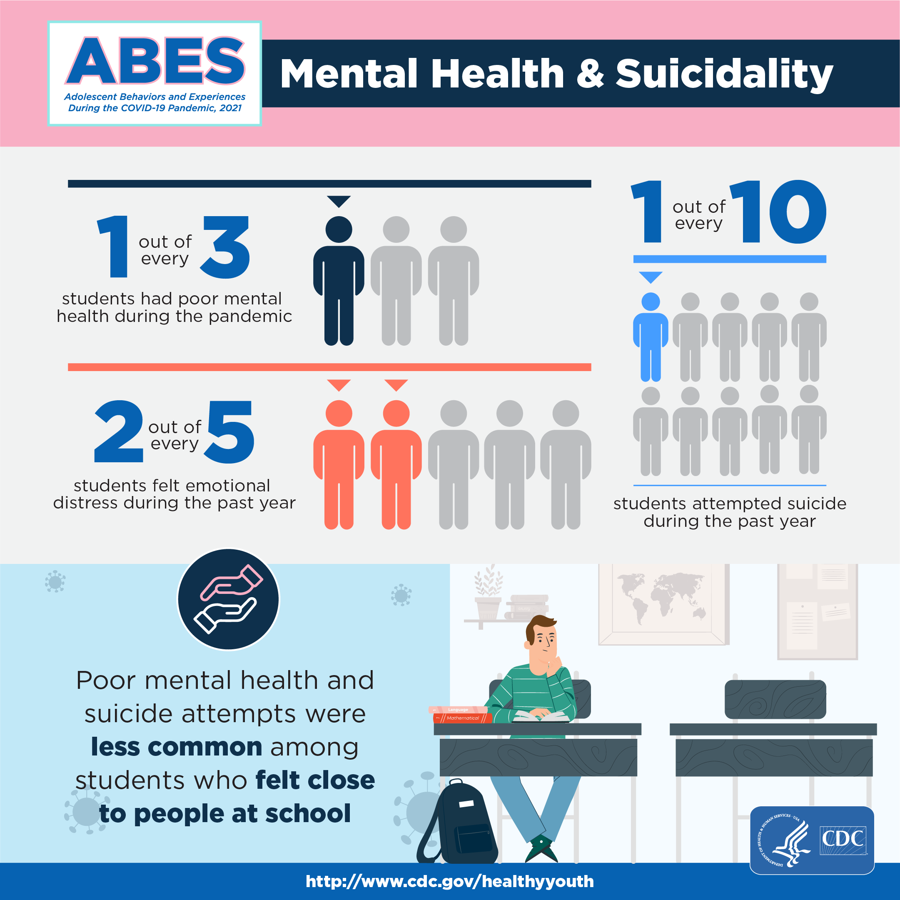

Teen Mental Health Statistics in 2022
Recent studies show the severity of teen mental health concerns are rising across the county.The CDCreports that:
- A combined 20 million children between the ages of 3 and 17 were diagnosed with either ADHD, anxiety, depression, or a behavioral disorder between 2016 and 2019.
- Among teens, over 15% had a major depressive episode, with 36.7% reporting persistent feelings of sadness.
- 4% of teens had a substance use disorder.
- Near 19% of teens reported seriously considering a suicide attempt.
- over 20% of children with depression did not receive any treatment, and over 40% of children with anxiety received no treatment.
A poll conducted by Ipos on behalf of NAMI found that teens are comfortable discussing mental health and the way it affects them.
Key Findings:
- 64% feel the world is more stressful now than when parents were their age
- 2 in 3 students agree schools should teach about what mental health is, including where and how to seek treatment
- 4 in 5 who seek mental health information from teachers say they trust their teachers and other adults at their school to provide it
- 67% think schools should offer days off for mental health
Overall, teens don't think their schools are doing enough.
